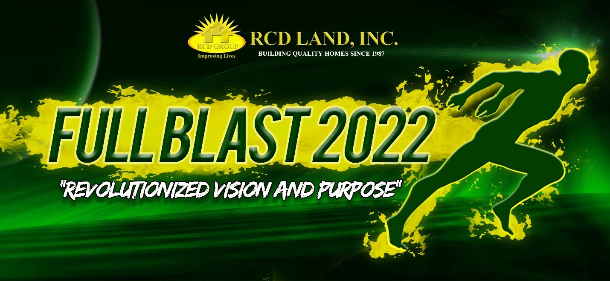
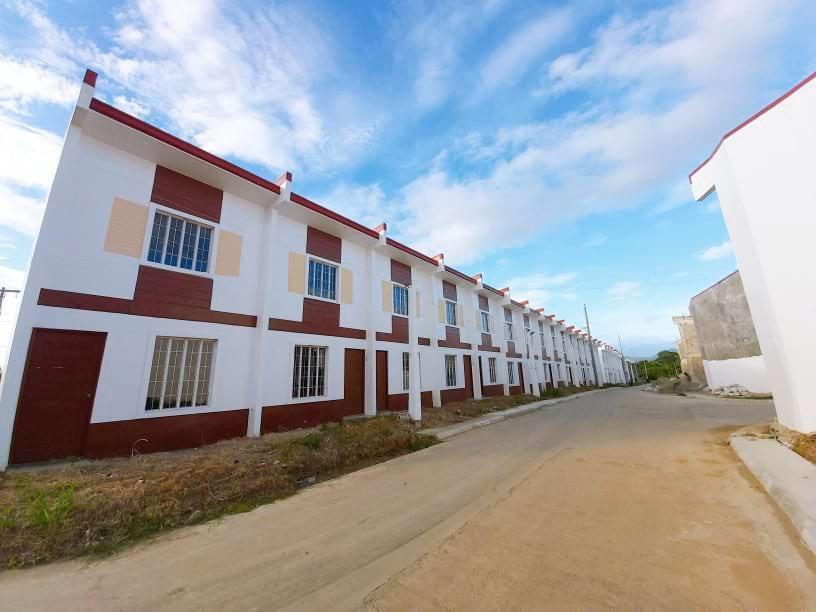
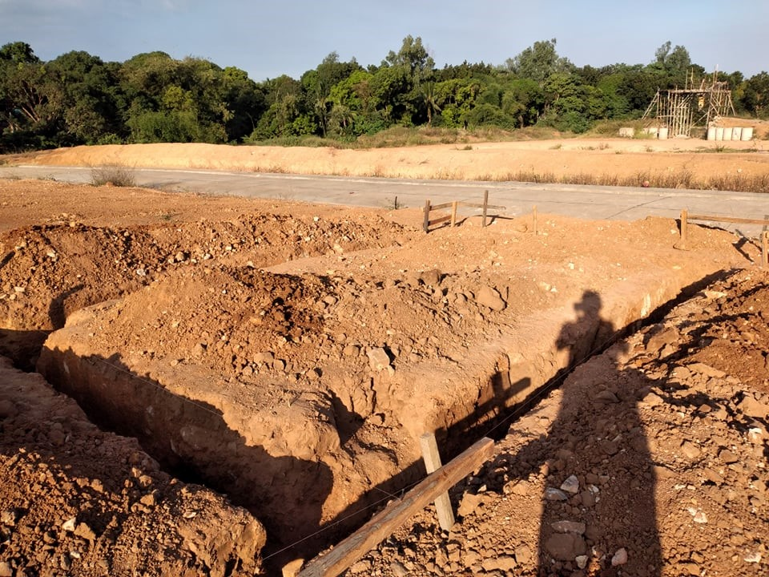

<section class="mt-[81px] py-20 bg-[#f7f7f7]">
    <div class="max-w-7xl mx-auto px-4">

        <!-- Section Header -->
        <div class="mb-12">
            <div class="max-w-5xl mx-auto flex items-start space-x-4">
                <div class="w-1 h-40 bg-green-500"></div>
                <div>
                    <h2 class="text-4xl font-bold text-gray-800">REVOLUTIONIZED PURPOSE AND VISION: RCD LAND IS
                        COMMITTED TO GO ON FULL BLAST IN 2022</h2>
                    <p class="text-gray-600 text-base mt-1 max-w-2xl">
                        With RCD Land’s response to embrace digital innovation brought by the global pandemic, RCD is
                        now set to take on another challenge. Last January 29, 2022 RCD brought the entire workforce
                        together to proclaim this year’s battle cry, “RCD FULL BLAST”.
                    </p>
                </div>
            </div>
        </div>

        <!-- Centered Photo -->
        <div class="flex justify-center my-12">
            
        </div>

        <!-- Author/Meta Info -->
        <div class="flex justify-center mb-8">
            <span class="text-sm text-gray-700">
                <span class="font-semibold">Author:</span> Nicole Dizon&nbsp;&nbsp;
                <span class="font-semibold">Category:</span> Kick Off Rally&nbsp;&nbsp;
                <span class="font-semibold">Date:</span> <span>August 21, 2021</span>
            </span>
        </div>

        <!-- Article Content -->
        <div class="max-w-3xl mx-auto text-gray-700 text-sm leading-relaxed px-4">
            <p>
                It represents the company’s dedication to go on a full swing on all areas of their methods, which
                involves planning, house construction, sales, marketing, and house turnovers. The event was broadcasted
                through Facebook Live with almost 250 live attendees and garnering about 2,500 views afterwards.
            </p>
            <h3 class="text-base font-semibold mt-8 mb-4">PROJECT UPDATES & PROGRESS FOR SOUTH AREA</h3>
            <p class="mt-6">
                The first agenda of the event is to give an update on the current and ongoing projects. RCD Land’s
                Project Manager for the South, Engr. Roy Tamayo, gave his piece on the South projects’ present
                situation. Kicking off with RCD Royale Homes Silang, additional amenities are already completed for
                Phase 1B and Phase 3. 132 single-attached housing units are completed in Phase 3B which is already at
                90% completion, while the remaining 10% is expected to be done by the 1st quarter of 2022. RRH Silang is
                also expanding with Phase 4 launching this year. Phase 4 has already started land development and is
                expected to be the new and improved version of all the phases combined. This new phase has direct access
                to the upcoming Aguinaldo-Magallanes-Nasugbu Road, also known as the East-West Road located at the back
                of the subdivision. This is expected to cut travel time to the Metro and nearby provinces, which
                immensely improves homeowners’ ease of access.
            </p>

            <!-- Centered Photo -->
            <div class="flex justify-center my-12">
                
            </div>

            <h3 class="text-base font-semibold mt-8 mb-4">In the photo: Townhouse Units in RCD Royale Homes Tuy Phase 3
            </h3>
            <p class="mt-6">
                RCD Royale Homes Tuy is continuously progressing with 132 single-attached units already completed which
                is 90% of the total saleable number. Land development in Phase 2 is 100% complete while the townhouses
                in Phase 3 are expected to be complete on then 2nd quarter of 2022. Meanwhile, RCD Villas de Trece has
                started the site preparation, land development, and layout in Phase 2. The Phase 1 of the subdivision is
                all ready with electric posts now properly installed. Engr. Roy has committed on a full swing and
                aggressive construction for South Projects in 2022.
            </p>

            <h3 class="text-base font-semibold mt-8 mb-4">PROMISING PROPERTY VALUE FOR ON GOING RCD PROJECTS IN THE
                NORTH AREA</h3>
            <p class="mt-6">
                North’s Project Manager, Engr. Bryan Achay, gave promising updates for RCD’s North projects. Engr. Achay
                admitted that the North Projects’ construction has been greatly affected by the pandemic but they are
                dedicated to resume and go on a full swing this year. RCD Royale Homes Norzagaray Bulacan is already at
                completed land development, Phase 1 has 18% accomplished, and Phase 2 at 47% construction of housing
                units. An awarding of clusters is expected in the first quarter of the year. The subdivision has also
                properly installed Meralco posts and waterline is now on an ongoing application and is expected to be
                installed on the 2nd quarter of the year. Moreover, the community holds its great appraisal from
                PAG-IBIG with the promising location and upcoming nearby developments such as the MRT Line 7 and the New
                Manila International Airport, which would greatly improve the area’s economic advancement and
                accessibility.
            </p>

            <!-- Centered Photo -->
            <div class="flex justify-center my-12">
                
            </div>

            <h3 class="text-base font-semibold mt-8 mb-4">In the photo: Land Development and Start of Construction for
                Model Houses in RCD Royale Homes Mariveles, Bataan</h3>
            <p class="mt-6">
                Also for the North, RCD Royale Homes Mariveles Bataan is progressing as we near completion of the
                subdivision’s land development with Phase 1 at 51.43%, Phase 2 at 69.14%, and Phase 3 at 77.16%. The
                construction of model houses has also started and is expected to be finished within the first quarter of
                the year. The subdivision’s location is also gaining attention with upcoming developments such as the
                Bataan-Cavite Interlink bridge which will give opportunities for expansion outside Metro Manila and
                enhance overall economic growth of Bataan.
            </p>

            <h3 class="text-base font-semibold mt-8 mb-4">GUEST SPEAKER, MR PAULO TIBIG: FIND YOUR “BAKIT” LIST
            </h3>
            <p class="mt-6">
                Mr. Paulo Tibig, a sought-after motivational speaker, also graced the event with his presence as he
                shares his knowledge on developing great mindset and habits towards Sales Excellence. He shared the
                Bright Side of Real Estate Selling which revolved around the borderless market opportunities, leveraging
                the multiplier effect, the evolving lifestyle preference, the omnipresence to generate leads, and the
                access and availability of loan facilities. More than this, he encouraged everyone to develop and
                attitude and habit to be productive and to always go back to their “bakit” list or their purpose for
                their hustle. And of course, to master the craft of selling, it’s always essential to patronize and know
                your own product so sellers can equip their clients with the necessary information they need.
            </p>

            <h3 class="text-base font-semibold mt-8 mb-4">RCD LAND TO OPEN TOTAL OF 156,500 SQM IN VARIOUS LOCATIONS IN
                2022</h3>
            <p class="mt-6">
                RCD keeps on expanding which assures its sellers a never-ending inventory for them to offer. The company
                will be launching four (4) new projects in 2022! First on the list is RCD Royale Homes Infanta which is
                a 12,300sqm lot area where 58 single-attached units are projected to rise in this first-class community.
                Next, we have RCD Villas GenTri, where 486 affordable townhouse units will be built on a 40,000sqm of
                lot area. Coming right up is the promising RCD Royale Homes Balayan sprawling over 80,140 sqm of plain
                terrain where 440 housing units are planned to take place. Last but not the least is the expansion of
                RCD Royale Homes Silang happening on 23,982 sqm of lot area where 210 single-attached units will be
                built. Providing quality homes remained as the main goal of the company and even better since these
                houses are offered at such affordable prices. This assures its homebuyers that they can continue to
                realize their dreams despite the current challenges.
            </p>

            <h3 class="text-base font-semibold mt-8 mb-4">2 BILLION WORTH OF INVENTORIES FOR 2022
            </h3>
            <p class="mt-6">
                With the upcoming projects announced, this gives a total of more than 2 Billion pesos worth of available
                inventories for current and upcoming projects combined. To be exact, RCD Land has a total of
                P2,541,998,326.76 available inventory for 2022 from unit offerings from RCD Royale Homes Tuy, RCD Villas
                de Trece, RCD Royale Homes Silang, RCD BF Townhomes, RCD Royale Homes Balayan, RCD Villas GenTri, RCD
                Royale Homes Mariveles, and RCD Royale Homes Infanta.
            </p>


            <!-- photo -->
            <div class="flex justify-center my-12">
                
            </div>

            <h3 class="text-base font-semibold mt-8 mb-4">In the photo: Single-detached units in the soon to rise RCD
                Royale Homes Infanta</h3>
            <p class="mt-6">
                RCD sellers has been incredible on their craft despite the pressing challenges brought by the pandemic.
                Thus, the company ensures that they stay motivated and rewarded with incentives and promos. A brand-new
                Honda Dio motorcycle is awarded to Mr. Gilbert Barrera from RCD’s 34th anniversary promo where the said
                seller has been picked as the lucky winner from his multiple raffle entries brought by his numerous
                sales on RCD projects.

            </p>
            <p class="mt-6">
                Moreover, RCD Land has announced their annual incentives for the year 2022. They will be giving away
                monthly, quarterly, and annual incentives. Qualifiers will be receiving up to P3,000 cash incentives on
                top of their commission for the monthly incentives, a chance to win an unlimited grocery hakot for the
                quarterly incentives, and a whooping brand new Isuzu Travis for the annual incentives! Prosperity packs
                are also awarded to all the January sellers who closed a reservation for the first month of the year.
            </p>


            <!-- photo -->
            <div class="flex justify-center my-12">
                
            </div>


            <h3 class="text-base font-semibold mt-8 mb-4">In the photo: RCD Sellers in a Zoom meeting</h3>
            <p class="mt-6">
                The ongoing pandemic has disrupted many ambitions and goals while some businesses have been deemed
                irrelevant and threatened. Fortunately, in the case of RCD Land, the company stayed relevant and is
                continuously innovating to withstand challenges. The company has developed a culture of success and
                winners among its members and with the light seem to be visible at the end of the road, the organization
                is indeed keen to consolidate its resources to come out even stronger this year.
            </p>

            <h3 class="text-base font-semibold mt-8 mb-4">RCD IS DETERMINED TO FACE 2022 AND BEYOND AGGRESSIVELY</h3>
            <p class="mt-6">
                As RCD Group’s President and CEO, Mr. Roland Delantar, stated, “We have already seen the worst in
                financial crisis, notably the financial crisis in 1997, the global financial crisis in 2007, and lately
                the 2020 financial crisis as a consequence of the pandemic. I thank GOD for giving RCD Group the chance
                to survive these global crises and I pray that no more of these will come in the future. Having
                experience several financial crises and survived them all give us a sense of confidence and enthusiasm
                as we look forward to the future. We at RCD have already prepared plans and projections for the year
                2022 and beyond. We’ll be in full blast not only this year but even in the upcoming years. We are very
                determined to face the future very aggressively. There’s so much in store for RCD in the next 5 years.”
            </p>


            <p class="mt-6">
                Realizing dreams, creating opportunities, and delivering commitments – these remain as RCD’s vision and
                purpose, and they continue to stay true to these promises. Even with the obstacles and adversities
                brought by the global pandemic, RCD Land stood strong and utilized these trials as their wings to become
                stronger, better, and bolder. They have gone through a radical shift to equip their stakeholders and
                have now become even more determined to go on a full blast with a revolutionized purpose and vision in
                2022.
            </p>